1)首先你需要下载SDL头文件和二进制文件。
你可以在SDL的官方网站上找到它们， 点此进入下载页。
向下滚动到Development Libraries部分，下载Mingw32开发包。

打开gz压缩包，里面应该有个tar压缩包。
打开tar压缩包 ，里面应该有一个文件夹。
将这个文件夹拷贝到你喜欢的任意地方。在本教程中，我把它放在C:\根目录
2)启动Dev C++，打开工具菜单下的编译选项。
3)单击目录选项卡，然后再单击C++包含文件。单击文件夹图标：
4)然后在库选项卡中添加SDL目录中的“lib”文件夹：
5)现在你需要将SDL目录中“bin”文件夹下的SDL.dll拷贝到你将要建立工程的地方。在编译程序时，你需要将SDL.dll和编译生成的exe放在同一个目录中。
另外，你也可以将SDL.dll拷贝到 “C:\WINDOWS\SYSTEM32”目录下，这样虽然SDL.dll与你的SDL程序不在同一个目录下，但程序仍能找到它。当然，如果你在使用64位的Windows系统，你就得把dll放于“C:\Windows\SysWOW64”目录中。
可是，这样处理存在一个问题：如果你有多个使用不同版本SDL库的应用程序，这会导致版本冲突。 如果你将SDL 1.2.8放于System32中，而应用程序使用的是1.2.13，这必然会导致问题。通常情况下，你需要把SDL.dll和你开发的可执行程序放在同一个目录下，并且当你发布你的应用程序时，你总是需要将SDL.dll与exe放在同一个目录下。
6)现在启动Dev C++并新建一个空工程。
7)进入工程属性
8)在普通选项卡下，设置类型为"Win32图形界面程序".
这是为了让程序启动时不弹出控制台窗口。
9)在参数选项卡下，粘贴如下命令到连接器方框中：
10)在工程中新建源代码文件。
11)将下面的代码粘贴到新建的源文件中：
你可以在SDL的官方网站上找到它们， 点此进入下载页。
向下滚动到Development Libraries部分，下载Mingw32开发包。
打开gz压缩包，里面应该有个tar压缩包。
打开tar压缩包 ，里面应该有一个文件夹。
将这个文件夹拷贝到你喜欢的任意地方。在本教程中，我把它放在C:\根目录
2)启动Dev C++，打开工具菜单下的编译选项。
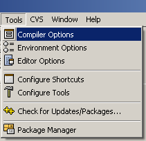
译者注：本教程中所有插图均采用原版插图，其中可能包含了英文内容，但由于制图过程较繁琐，均不作翻译处理。
3)单击目录选项卡，然后再单击C++包含文件。单击文件夹图标：
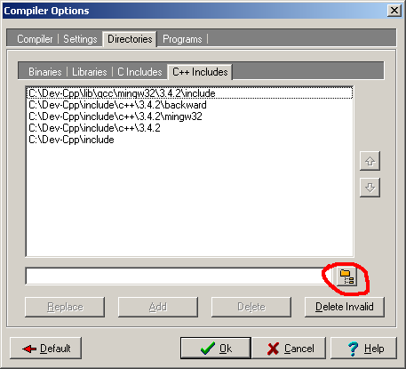
然后将你解压出来的SDL目录中的“include”文件夹加入列表中
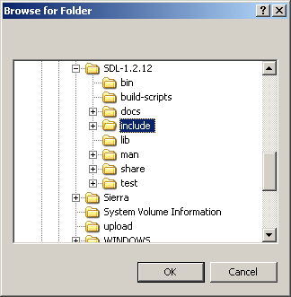
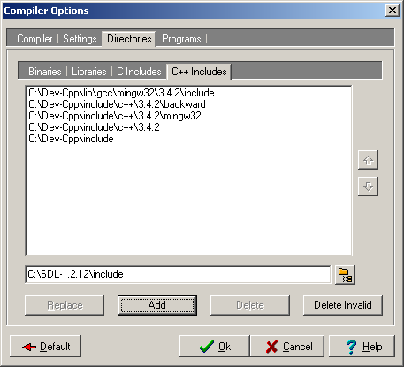
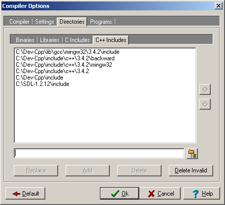
然后将你解压出来的SDL目录中的“include”文件夹加入列表中
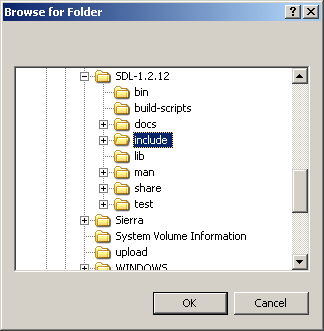
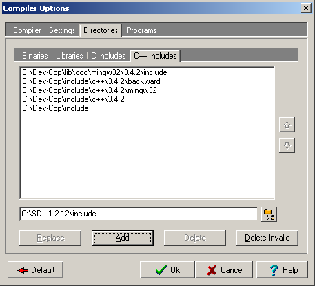
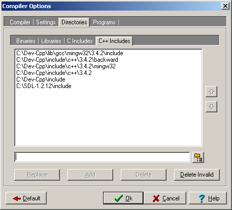
4)然后在库选项卡中添加SDL目录中的“lib”文件夹：
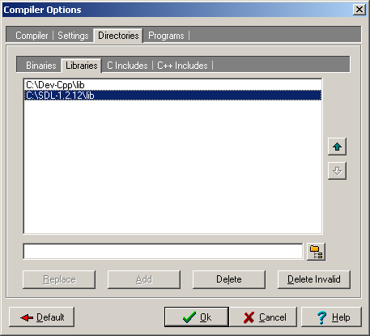
5)现在你需要将SDL目录中“bin”文件夹下的SDL.dll拷贝到你将要建立工程的地方。在编译程序时，你需要将SDL.dll和编译生成的exe放在同一个目录中。
另外，你也可以将SDL.dll拷贝到 “C:\WINDOWS\SYSTEM32”目录下，这样虽然SDL.dll与你的SDL程序不在同一个目录下，但程序仍能找到它。当然，如果你在使用64位的Windows系统，你就得把dll放于“C:\Windows\SysWOW64”目录中。
可是，这样处理存在一个问题：如果你有多个使用不同版本SDL库的应用程序，这会导致版本冲突。 如果你将SDL 1.2.8放于System32中，而应用程序使用的是1.2.13，这必然会导致问题。通常情况下，你需要把SDL.dll和你开发的可执行程序放在同一个目录下，并且当你发布你的应用程序时，你总是需要将SDL.dll与exe放在同一个目录下。
6)现在启动Dev C++并新建一个空工程。
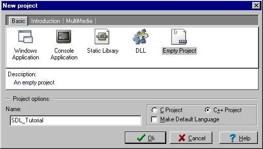
7)进入工程属性
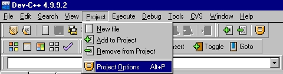
8)在普通选项卡下，设置类型为"Win32图形界面程序".
这是为了让程序启动时不弹出控制台窗口。
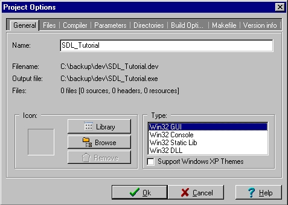
9)在参数选项卡下，粘贴如下命令到连接器方框中：
-lmingw32 -lSDLmain -lSDL
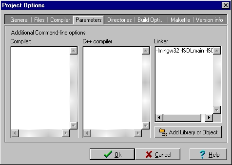
10)在工程中新建源代码文件。
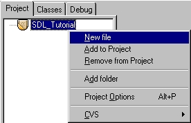
11)将下面的代码粘贴到新建的源文件中：
#include "SDL/SDL.h"
int main( int argc, char* args[] )
{
//启动SDL
SDL_Init( SDL_INIT_EVERYTHING );
//退出SDL
SDL_Quit();
return 0;
}
12)现在开始编译。当然，如果还未保存源码，需先保存一下，然后要确保SDL.dll与即将编译出来的exe放于同一个目录中（或者置于“C:\WINDOWS\SYSTEM32”中）。如果编译没有出错，你就成功了。否则，请查看前面的步骤，确保没有跳过任何一步。